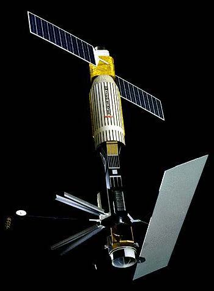

About
_
Undergraduate Researcher — Physical AI & Space Security
Undergraduate student in Electronic Engineering at Jeonbuk National University, currently completing a convergence major in Advanced Defense Industry. Interested in physical AI and space security, with current research on exoskeleton systems and SAR satellite security.
Physical AI
Space Security
Cyber Security
Career
- 2026.07 – 2026.08 Summer Research Trainee, Enseption Team Electronics and Telecommunications Research Institute (ETRI)
- 2026.01 – Present Undergraduate Intern, DAS LAB (Defense Advanced Security Lab) Dept. of Advanced Defense Industry, Jeonbuk National University
- 2025 Pursuing Convergence Major in Advanced Defense Industry Jeonbuk National University
- 2025 Vice President, Student Council Dept. of Electronic Engineering, Jeonbuk National University
- 2025 Completed Defense Program Manager Certification, Level 3 (Weapon Systems) Defense Acquisition Program Administration (DAPA)
- 2024 Participant, Idea Contest Hanwha Aerospace
- 2023 Completed Mandatory Military Service (Enlisted, 1278th Class) Republic of Korea Marine Corps
- 2021 Admitted to Dept. of Electronic Engineering Jeonbuk National University
Research
Exoskeleton
Research on exoskeleton systems from a physical AI perspective, focusing on human-machine interaction and control.

SAR Satellite Security
Research on synthetic aperture radar (SAR) satellite systems from a space security perspective, focusing on sensing pipeline and signal-level security.
Publications
- 2026.08 (Forthcoming) 자율주행 인지 파이프라인의 개입 위치에 따른 LiDAR/Radar 보안 기술과 향후 연구 방향 Journal of the Korea Institute of Information Security & Cryptology (JKIISC), August Issue First Author
Contact
- emailyp1278kr@jbnu.ac.kr